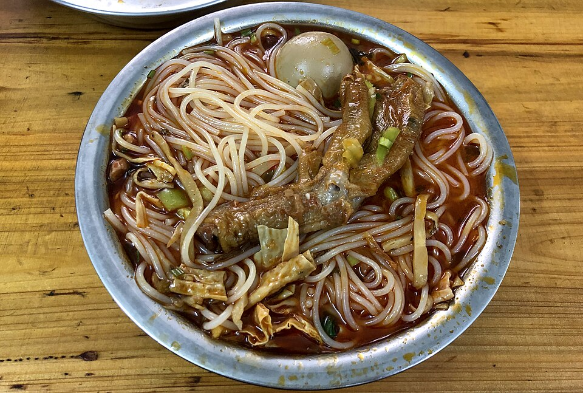

青云市场的小吃
芝麻糊、豆粉馍、露水汤圆、五彩糯米饭与酸嘢，挑两三样尝尝。安排早上逛是行程建议，各摊营业不同。
查看市场位置
一天一条主线，留出午休与临时换店的余地。
合并老城逛吃与返程日，保留龙潭公园和窑埠夜游。马鞍山看体力与开放情况决定，不必全部打卡。
三家候选，选顺路的一家；口味偏好留给你自己。
先点小份、说明辣度，再选炸蛋或腐竹。配料有没有、加多少钱，看当日菜单。想比较不同店，隔一餐再吃，别把旅程变成吃粉竞赛。
白天看山水，晚上留给江边。
咖啡与购物按区域选择，减少专程折返。
预算为准备金估算，不是门店或酒店报价。
住宿每间每晚 ¥180–350，住两晚，按所选人数均摊。
目的地是柳州，核对购票站名、酒店地址和返程时刻。出发前按实时导航预留到站缓冲，不用固定分钟数代替实际路况。
等位超过你愿意投入的时间，就在同片区找菜单清楚的替代门店。候选店存在历史报道不等于当前每家分店都营业，到店前再核对。
雷雨时取消登山和江边散步。马鞍山开放、登山路径与电梯运行尚未核验，出发前确认；不承诺夜间入园。雨天改酒店休息、商超或有室内座位的餐饮。
“本地最好吃”没有统一标准。辣度、汤底和配料按自己的偏好问店员；菜单与价格看现场，不把历史照片价格当现价。
本轮核对：2026.09.30 / 尚未实地体验
景点身份与区域基于公开资料；游览顺序、时长、预算与替代方案属于规划建议。未核实当前门票、实时营业、预约、路况与假日公告，具体日期确定后再做针对性更新。
螺蛳粉照片：N509FZ，2019 年 4 月 20 日摄于柳州；原始来源，CC BY-SA 4.0。本站使用缩小版本并在版面裁切，图片衍生保持同许可。不是推荐门店实拍，也不代表当前价格或份量。
可在下一轮提供笔记链接或公开网页，补充门店、体验与避坑线索，再交叉核对地址、营业和日期。当前版本未采集小红书，没有声称全站排名；不会把推广笔记或个人口味当成客观结论。